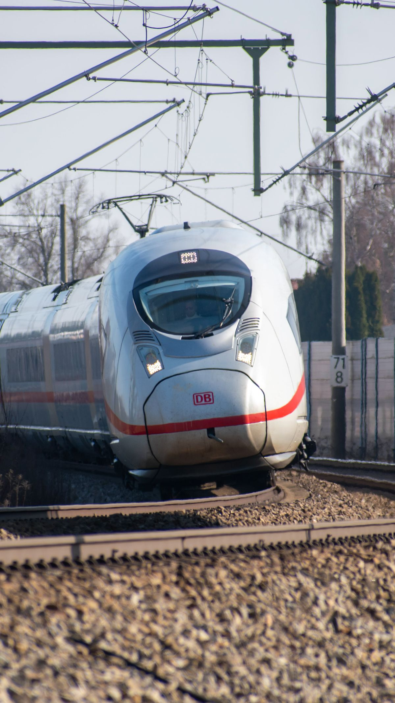

Study file 01Drag audit & remediation · S.01
The drag was in the gaps
The brief
An eight-car intercity fleet was burning more energy than its type figures promised, and the operator's energy team and the manufacturer were blaming each other. The fleet's brochure said Cd·A 6.9 m². Nobody had ever coasted the train down and checked.
The decisions
Instrumented coast-downs first — before the tunnel, before any opinion. The coast-down said 7.6 m² (Class 1 in Table T1). The tunnel then ranked the contributors: open inter-car gaps 0.4 m², unfaired bogies 0.3 m², the pantograph well 0.2 m². The long nose the client wanted to redesign accounted for almost nothing, and the report said so, in the summary, in bold. The refit budget went to gap seals, bogie fairings and a pantograph shroud instead.
The outcome
Post-refit coast-down: Cd·A 6.7 m² — a 0.9 m² saving worth 0.32 MW at 300 km/h (0.6125 × 83.333³ × 0.9, if you want to check me), ≈ 1.53 GWh a year across the fleet's 4,800 diagram-hours. The fleet now runs as Class 2 in Table T1 — same train, honest number.
“Kenji's audit paid for itself in the first timetable year — and he was the only bidder who told us our flagship's published drag figure was wrong before he'd won the work. The gaps and bogies, not the nose. We have stopped redesigning noses.”
